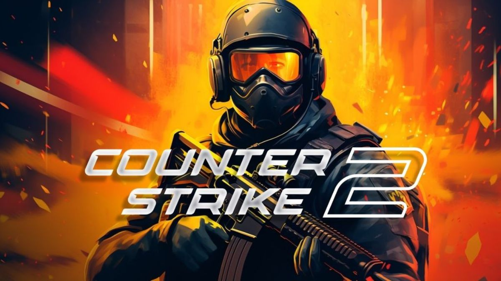

Counter Strike 2

Counter-Strike 2 es un videojuego de disparos en primera persona desarrollado por Valve Corporation y Hidden Path Entertainment, el juego consiste en dos equipos, los Terroristas y los Antiterroristas, los cuales se enfrentan entre ellos en diferentes modos de juego. El modo más común es en el cual el bando Terrorista tienen que plantar y defender una bomba mientras los Antiterroristas defender las zonas de plante de la bomba y su posterior desactivación.
League of Legends

League of Legends es un videojuego multijugador de arena de batalla en línea desarrollado y publicado por Riot Games, En el juego, dos equipos de cinco jugadores luchan en un combate jugador contra jugador, cada equipo ocupando y defendiendo su mitad del mapa. Cada uno de los diez jugadores controla un personaje, conocido como "campeón", con habilidades únicas y diferentes estilos de juego.
Minecraft

Minecraft fue creado originalmente por el sueco Markus Persson,es un juego de mundo abierto, y no tiene un fin claramente definido, esto permite una gran libertad en cuanto a la elección de su forma de jugar. A pesar de ello, el juego posee un sistema que otorga logros por completar ciertas acciones.